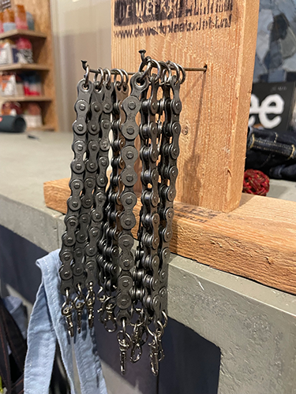
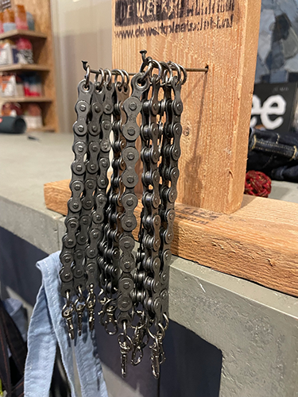

Duurzame kunst en decor in Amsterdam?
The Upcycle
Sint Annendwarsstraat 13, 1012 HC Amsterdam
The Upcycle is een buurtlab voor het inzamelen en upcyclen van gescheiden afval. Het bevindt zich midden in het Red Light District, in The Upcycle Store. Jonge makers en designers van The Upcycle gaan aan de slag met jouw ingeleverde materialen en geven ze waarde in de vorm van een nieuw product.
The Upcycle
Wonder Wasteland

 


Online Upcycle Store
WebshopBij The Upcycle winkel kun je een uitgebreide selectie van prachtige en creatieve spulletjes vinden, die uitstekende
cadeaus vormen. Denk aan riemen gemaakt uit gerecyclede fietsbanden,
kaarsen die zijn gemaakt van overgebleven kaarsvet en zelfs sieraden die zijn vervaardigd van afgeschraapte spraypaint.
The Upcycle maakt niet alleen zijn eigen ontwerpen, maar ze delen ook hun kennis met anderen door middel van workshops waarbij ze mensen aansturen om ook zelf op een creatieve en handige manier hun eigen gerecyclede ontwerpen tot leven te kunnen brengen.
Workshops